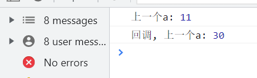

setState挑战componentDidUpdate (react篇)
长白山上的小寺庙, 挂上了牌匾:武当山. 石狮子脚下, 一老一小俩和尚对坐, 小和尚眨巴着眼, 老和尚半眯纳凉. 小和尚: 师傅, 你出家前学软件的? 师傅: 俺剃度前装网线的. 小和尚仰起头: 你知道setState是啥吗? 老和尚: 更新页面的方法, 脸书这家公司搞的 小和尚: 更新页面? 老和尚拿起拂尘往天空一点: 23就显示在页面了
页面:
小和尚: 那setState也没啥了不起 老和尚: 你说我再一个setState, 会打印上一个state的值吗? 小和尚: 当然, 你不是说更新吗 “哐”老和尚敲了一下小和尚脑门, “是更新页面, 没说立刻更新数值, 你这样学武不仔细很容易走火入魔” 瞧那云朵:

老和尚: 计算值没有立刻更新, 在回调里可以拿到更新. 哦对, 计算机的黑话:立刻做 叫同步, 过段时间想起来再做 叫异步. 小和尚: 就遇到绿林好汉, 说黑话可以一道? 感觉回调触发了新一轮事件呀 老和尚: 差不多. 近老夫者赤, 有悟性. 这不有componentDidUpdate , 它就没触发新轮事件, 还能拿到新state.
小和尚: componentDidUpdate有啥用, 不有componentDidMount了吗 老和尚: 比如你更新了页面, 黑话是渲染页面, 用户不需要操作, 又要计算数值, 不就可以用componentDidUpdate了吗, 比如计时器. 小和尚微微摇头惊叹, (适时的拍拍马屁, 晚餐多加馒头): 师傅真厉害! 姜老是, 哦不, 听君一席话... 老和尚摸了摸胡须: 嗯, 回去想想如何用componentshouldupdate提高性能, 还有es5写react.